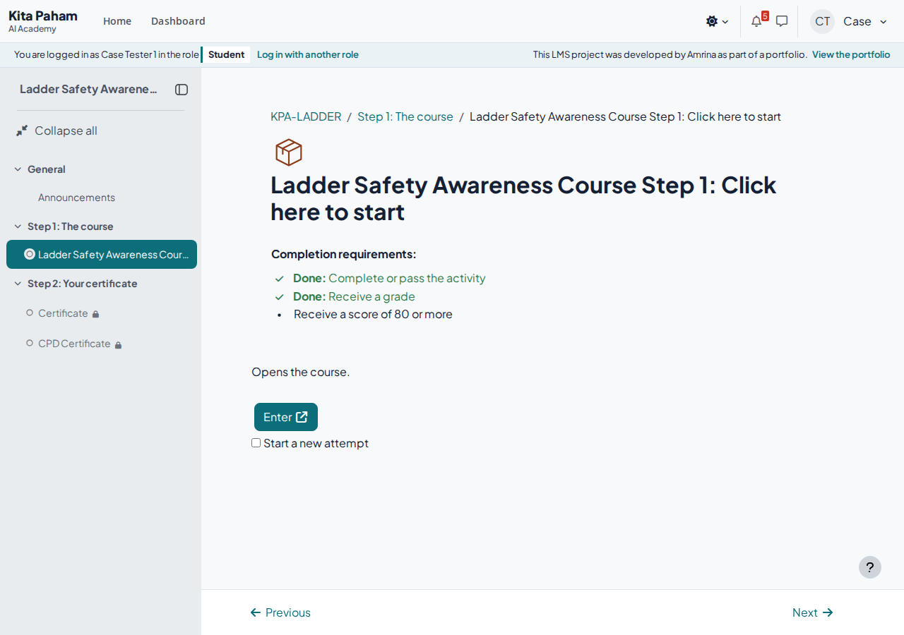
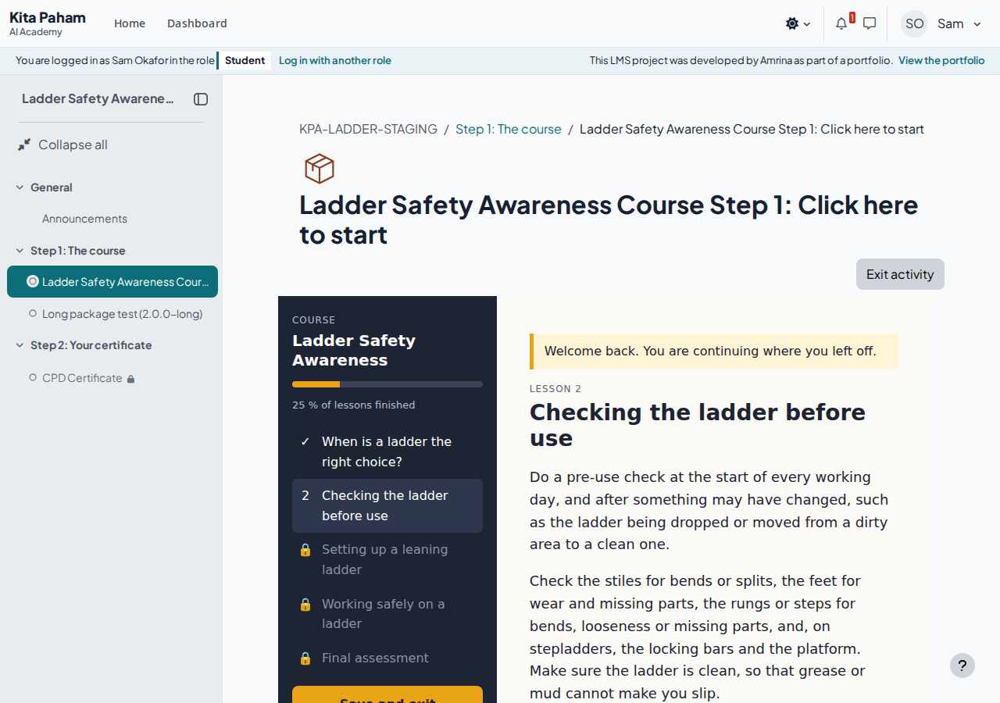
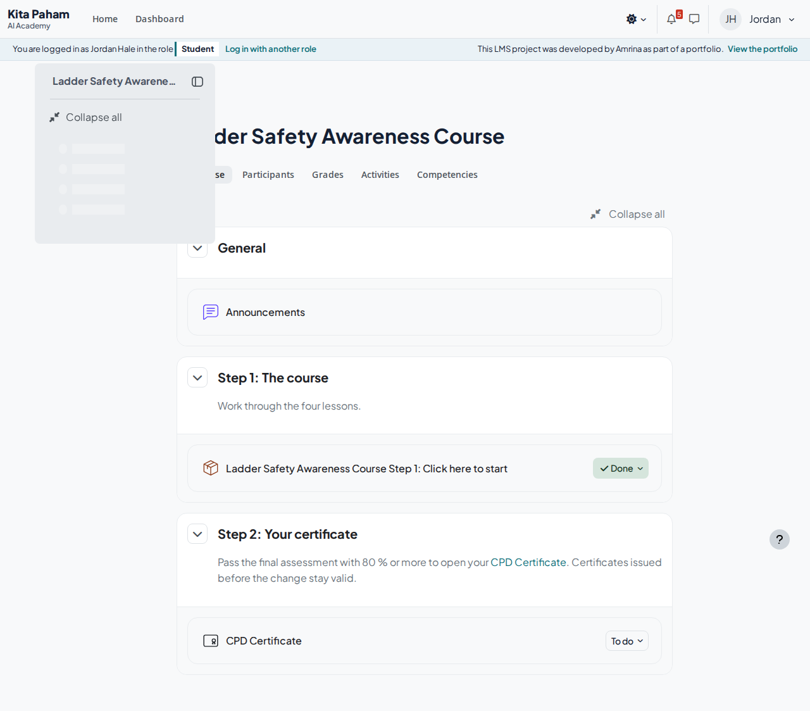
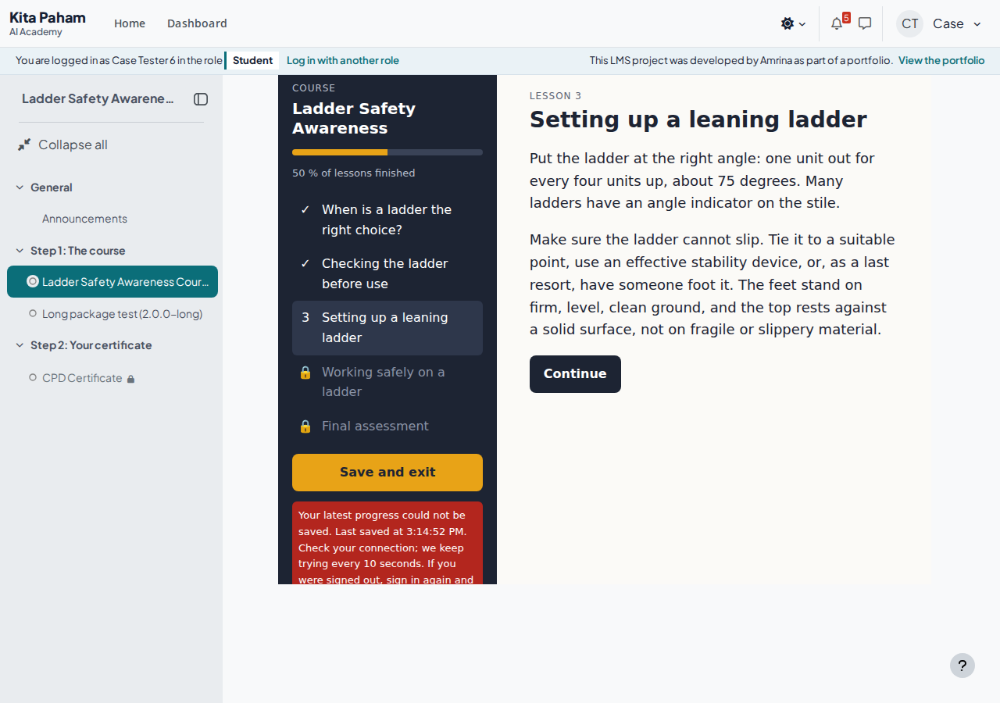
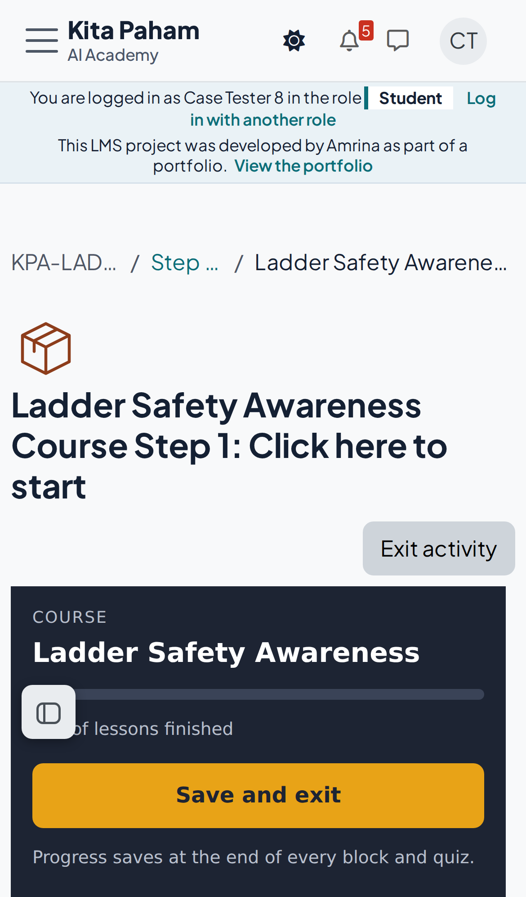

Kita Paham AI Academy / SCORM case study · personal project
A SCORM course told Moodle that learners had passed. Moodle showed a grade of 0 and kept the course not complete, so nobody got a certificate. I rebuilt the case on my own Moodle 5.3 site with synthetic learners, recovered the affected learners from the records they already had, fixed it for good and tested the result as a learner would.
// attempt 3, as saved by package 1.0.0 LMSInitialize("") SetValue("cmi.core.lesson_status", "incomplete") SetValue("cmi.interactions.0.id", "l1_q1") SetValue("cmi.interactions.0.result", "correct") // … 20 answers, all correct SetValue("cmi.core.lesson_location", "l4") SetValue("cmi.suspend_data", "{done:[l1,l2,l3,l4]…}") SetValue("cmi.core.lesson_status", "passed") // cmi.core.score.raw: never set LMSCommit("") LMSFinish("")
Not completed. Gradebook 0.00.
The package tracked course completion: it sent the answers as interactions and the status passed when every lesson was finished, but it never sent a score. The activity, on the other hand, required a minimum score of 80. A score that never arrives can never be 80, so the activity could not complete, and the CPD Certificate, which depended on it, stayed closed.
Two settings made it harder to see: Display attempt status was off, so learners saw nothing on the entry page, and the maximum grade was 80, which looks like a pass mark but is only the top of the scale. The grade to pass was not set at all.
Evidence: the deployed package (sha256 bf3093172e96…) has no mastery score and no score.raw call; all saved values of every attempt, with timestamps in Europe/London, are in the evidence export.


Before changing anything, I exported the evidence, then recovered the learners from the records that already existed. Nobody had to repeat the course.
| Learner (synthetic) | What the records show | Outcome |
|---|---|---|
| Jordan Hale | 3 attempts, all passed, no score; attempt 3 has 20 of 20 correct answers | Recovered by recorded override; CPD Certificate available |
| Tom Becker | 1 attempt passed, no score; 19 of 20 correct, lesson 2 at 4 of 5 (meets the rule) | Recovered by recorded override |
| Priya Nair | Completed by hand on 25 September by the course administrator; same fault in the attempt | A workaround for the same fault; kept as it is |
| Sam Okafor | Stopped in lesson 2, status incomplete | Not affected; resumes in the new package |
Your course record is now complete. Moodle had saved all three of your attempts and every answer: each attempt passed, and in the last one all 20 answers were correct. The course package did not send a score, so Moodle could not mark the course complete. We confirmed your pass from the saved answers and corrected your completion; your attempts are unchanged. Your CPD Certificate is ready under Step 2 of the course. You do not need to do anything else.
Model chosen: one overall numeric score from a final assessment. The lessons keep their knowledge checks, which still go to Moodle as interactions; the final assessment covers all four lessons and is the only tracked score, so it is not presented as an average of module scores.
| Setting | As found | After |
|---|---|---|
| Display package | New window | Current window |
| Display attempt status | No | Dashboard and entry page |
| Maximum grade | 80 | 100 |
| Grade to pass | not set | 80 |
| Mastery score in the manifest | none | 80 |
| Mastery score overrides status | Yes | No |
| Force new attempt | No | When previous attempt completed, passed or failed |
| Attempts grading | Highest attempt | Highest attempt |
| Auto-commit | No | Yes |
| Auto-continue | Yes | No |
| Required status | Completed or Passed | Passed |
| Minimum score | 80 | 80 |
| Receive a passing grade | No | Yes |
Package 1.0.0 bf3093172e96… replaced by 2.0.0 ec98aac07195…; the SCO identifier stays the same, so every saved value remains linked.
Status passed and score 80 and passing grade together mean a result below 80 can never complete, whatever the package reports.
Mastery override off. The package reports a fail as incomplete, so the learner returns to the same attempt for a retake. With override on, Moodle would turn that into failed, and the next launch would start a fresh attempt.
New attempt after a finished one, highest attempt counts. Reopening a passed course can no longer overwrite the pass. The SCORM lab below shows what happens without it.
Current window. No pop-up blocking, and Save and exit returns to the course page on desktop and phone.
Auto-commit on. Measured: Moodle sent an unsaved change by itself after 61 seconds.

Dedicated test learners, a real browser, never the administrator preview. Each test lists account, course, package, browser, steps, expected and actual outcome, and its evidence. Open a test for the detail.
Lesson and block (text position inside a block is not saved).
Firefox and Safari were not available on the test server; phones are emulated in Chromium, not real devices.
The 100 % rule (one wrong answer fails, all correct passes) is tested in the SCORM lab course, Site Induction check.
Issuance and e-mail are separate checks: the demo server has no outgoing mail route, so an e-mail can be generated but not delivered.
Site setting scormstandard is off, so Moodle accepts more than the SCORM 1.2 limit of 4096 characters. With it on, the same package would be rejected with error 405.
The package has no audio, so audio pause and playback were not applicable.


Found during the work, each reproduced on this site.
When the request fails, mod/scorm/request.js retries with the Beacon API and returns "true" without hearing from the server. Offline, the package is told its progress is saved when it is not. Package 2.0.0 checks the connection before it commits and saves again when it comes back; measured loss after a 7-second outage: nothing.
Saving unlocked completion settings deletes all completion rows and recalculates them. In staging all three overrides disappeared. The repair script puts them back exactly as they were.
A restored staging copy keeps the completions but loses overrideby, so overrides look automatic. The staging script copies the marker over, or a staging test would prove nothing.
My first release required the SCORM activity to be complete and passed for the certificate. A manual override is only complete, so the recovered learners lost access. The check after the release caught it; the condition is now "complete", which, with the new rule, already requires a pass of 80.
With the SCORM 1.2 standard mode off, Moodle stored and returned about 30 000 characters of suspend data without an error. With it on, values above 4096 characters are rejected.
Every course on the site, live, hidden or test copy, and every assessed activity, with the approved rule and its source, the content rule kept apart from the pass mark, the actual settings and the action. Courses tested with learner accounts are marked; the rest are a settings audit.
| Course | Activity | Approved rule and source | Content rule | Actual settings | Defect and learners to review | Action and test |
|---|---|---|---|---|---|---|
| Ladder Safety Awareness Course (STAGING) id 25, hidden test copy |
Ladder Safety Awareness Course Step 1: Click here to start | Test configuration, not learner-facing Test bench |
n/a | scale 0 to 100, pass 80, package 2.0.0, score.raw 0 to 100 | none found case.tester1 |
Review listed learners tested with learner accounts |
| Ladder Safety Awareness Course (STAGING) id 25, hidden test copy |
Long package test (2.0.0-long) | Test configuration, not learner-facing Test bench |
n/a | scale 0 to 100, pass none, package 2.0.0-long, score.raw 0 to 100 | none found | No change tested with learner accounts |
| Module 1: AI Literacy Essentials (trial) id 8, live |
Check: Chapter 1 quiz | Each chapter quiz 60 %; a chapter opens after the previous quiz is passed Course specification: build_course.php and the quiz introduction |
Every Read and Try page viewed (activity completion) | scale 0 to 100, pass 60 | none found | No change tested with learner accounts |
| Module 1: AI Literacy Essentials (trial) id 8, live |
Check: Chapter 2 quiz | Each chapter quiz 60 %; a chapter opens after the previous quiz is passed Course specification: build_course.php and the quiz introduction |
Every Read and Try page viewed (activity completion) | scale 0 to 100, pass 60 | none found | No change tested with learner accounts |
| Module 1: AI Literacy Essentials (trial) id 8, live |
Check: Chapter 3 quiz | Each chapter quiz 60 %; a chapter opens after the previous quiz is passed Course specification: build_course.php and the quiz introduction |
Every Read and Try page viewed (activity completion) | scale 0 to 100, pass 60 | none found | No change tested with learner accounts |
| Module 2: AI in Teaching and Learning (trial) id 9, live |
Check: Chapter 1 quiz | Each chapter quiz 60 %; a chapter opens after the previous quiz is passed Course specification: build_course.php and the quiz introduction |
Every Read and Try page viewed (activity completion) | scale 0 to 100, pass 60 | none found | No change untested (settings audit only) |
| Module 2: AI in Teaching and Learning (trial) id 9, live |
Check: Chapter 2 quiz | Each chapter quiz 60 %; a chapter opens after the previous quiz is passed Course specification: build_course.php and the quiz introduction |
Every Read and Try page viewed (activity completion) | scale 0 to 100, pass 60 | none found | No change untested (settings audit only) |
| Module 2: AI in Teaching and Learning (trial) id 9, live |
Check: Chapter 3 quiz | Each chapter quiz 60 %; a chapter opens after the previous quiz is passed Course specification: build_course.php and the quiz introduction |
Every Read and Try page viewed (activity completion) | scale 0 to 100, pass 60 | none found | No change untested (settings audit only) |
| Module 3: AI, Work and Society (trial) id 10, live |
Check: Chapter 1 quiz | Each chapter quiz 60 %; a chapter opens after the previous quiz is passed Course specification: build_course.php and the quiz introduction |
Every Read and Try page viewed (activity completion) | scale 0 to 100, pass 60 | none found | No change untested (settings audit only) |
| Module 3: AI, Work and Society (trial) id 10, live |
Check: Chapter 2 quiz | Each chapter quiz 60 %; a chapter opens after the previous quiz is passed Course specification: build_course.php and the quiz introduction |
Every Read and Try page viewed (activity completion) | scale 0 to 100, pass 60 | none found | No change untested (settings audit only) |
| Module 3: AI, Work and Society (trial) id 10, live |
Check: Chapter 3 quiz | Each chapter quiz 60 %; a chapter opens after the previous quiz is passed Course specification: build_course.php and the quiz introduction |
Every Read and Try page viewed (activity completion) | scale 0 to 100, pass 60 | none found | No change untested (settings audit only) |
| Ladder Safety Awareness Course id 19, live |
Ladder Safety Awareness Course Step 1: Click here to start | Final assessment 80 % (overall course score); every lesson check 4 of 5 to continue Package course.json (final assessment) and the chosen assessment model |
All four lessons finished inside the package (gating); no audio or video | scale 0 to 100, pass 80, package 2.0.0, score.raw 0 to 100 | none found case.tester1 |
Review listed learners tested with learner accounts |
| SCORM lab: test bench id 15, hidden test copy |
Before: completion-tracked package, Moodle default rule | Test configuration, not learner-facing Test bench |
n/a | scale 0 to 100, pass none, package lab, not sent | none found | No change tested with learner accounts |
| SCORM lab: test bench id 15, hidden test copy |
After: quiz-result package, passed + 80 % + passing grade | Test configuration, not learner-facing Test bench |
n/a | scale 0 to 100, pass 80, package lab, score.raw 0 to 100 | none found | No change tested with learner accounts |
| SCORM lab: test bench id 15, hidden test copy |
Before: manifest mastery score 60 for an 80 % check, override on | Test configuration, not learner-facing Test bench |
n/a | scale 0 to 100, pass none, package lab, score.raw 0 to 100 | none found | No change tested with learner accounts |
| SCORM lab: test bench id 15, hidden test copy |
After: same package, pass mark also required by Moodle | Test configuration, not learner-facing Test bench |
n/a | scale 0 to 100, pass 80, package lab, score.raw 0 to 100 | none found lab.tester4 |
Review listed learners tested with learner accounts |
| SCORM lab: test bench id 15, hidden test copy |
Before: retake in the same attempt | Test configuration, not learner-facing Test bench |
n/a | scale 0 to 100, pass 80, package lab, score.raw 0 to 100 | none found | No change tested with learner accounts |
| SCORM lab: test bench id 15, hidden test copy |
After: new attempt after a finished one, highest attempt counts | Test configuration, not learner-facing Test bench |
n/a | scale 0 to 100, pass 80, package lab, score.raw 0 to 100 | none found | No change tested with learner accounts |
| Construction Safety Essentials (SCORM lab) id 14, live |
Working at Height: knowledge check | Working at Height 80 %; Site Induction 100 %; Module 2 opens after Module 1 is passed Package specification packages.json and the course summary |
None beyond the knowledge checks | scale 0 to 100, pass 80, package lab, score.raw 0 to 100 | none found | No change tested with learner accounts |
| Construction Safety Essentials (SCORM lab) id 14, live |
Site Induction: sign-off check | Working at Height 80 %; Site Induction 100 %; Module 2 opens after Module 1 is passed Package specification packages.json and the course summary |
None beyond the knowledge checks | scale 0 to 100, pass 100, package lab, score.raw 0 to 100 | none found | No change tested with learner accounts |
| Model | Package | Moodle |
|---|---|---|
| Overall score, 80 % | Track the final assessment; pass mark 80; report passed, fail as incomplete; manifest mastery 80 | Scale 0 to 100, grade to pass 80, status passed + minimum score 80 + passing grade, mastery override off, new attempt after a finished one, highest attempt, attempt status shown |
| Overall score, 100 % | As above with pass mark 100 | As above with 100; one wrong answer fails (tested in the SCORM lab) |
| Completion only | Track course completion; report passed or completed | Status passed or completed only, no score or grade condition, scale not used for passing. Needs the course owner's agreement, because no score is reported. |
A test bench with one activity per setting, played by test learners. The visible lab course on the site uses the corrected settings with an 80 % and a 100 % check.
| Activity | Learner action | Grade reported | Completion shown to the learner |
|---|---|---|---|
| Before: package tracks completion, Moodle default rule | scores 40 % | 40% | Done: Complete the activity |
| After: quiz result, passed + 80 % + passing grade | scores 40 % | 40% | To do: Pass the activity Done: Receive a grade Failed: Receive a passing grade To do: Receive a score of 80 or more |
| After: quiz result, passed + 80 % + passing grade | retakes, scores 80 % (pass mark) | 80% | Done: Pass the activity Done: Receive a grade Done: Receive a passing grade Done: Receive a score of 80 or more |
| Before: manifest mastery 60 for an 80 % check | scores 60 % | 60% | To do: Pass the activity |
| After: Moodle also requires 80 | scores 60 % | 60% | To do: Pass the activity Done: Receive a grade Failed: Receive a passing grade To do: Receive a score of 80 or more |
| Before: retake inside the same attempt | scores 100 % | 100% | Done: Pass the activity Done: Receive a grade Done: Receive a passing grade Done: Receive a score of 80 or more |
| Before: retake inside the same attempt | re-enters later, retakes, scores 40 % | 40% | Done: Pass the activity Done: Receive a grade Failed: Receive a passing grade To do: Receive a score of 80 or more |
| After: new attempt after a finished one, highest attempt counts | scores 100 % | 100% | Done: Pass the activity Done: Receive a grade Done: Receive a passing grade Done: Receive a score of 80 or more |
| After: new attempt after a finished one, highest attempt counts | re-enters later, retakes, scores 40 % | 100% | Done: Pass the activity Done: Receive a grade Done: Receive a passing grade Done: Receive a score of 80 or more |